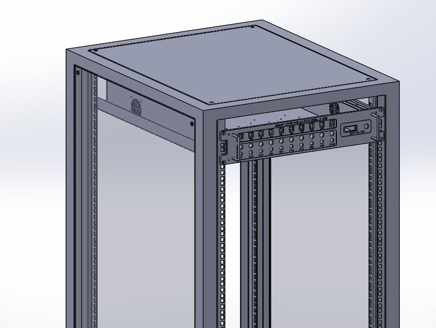
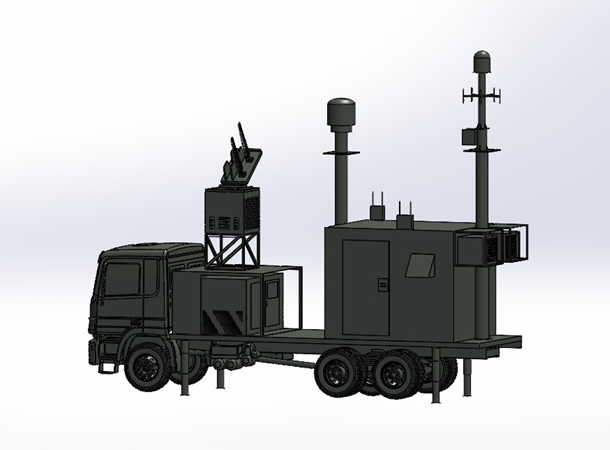

Mechanical design & CAD
AutoCADSolidWorksPTC Creo3D CAD ModelingAssembly Design2D Engineering DrawingsReverse EngineeringDesign for ManufacturingEquipment Layout & Integration
Industrial EngineerDesign Engineer
ABOUT ME
I am Zeeshan Mumtaz, a Design Engineer and Industrial Engineering graduate with practical experience in mechanical systems, CAD assemblies and engineering documentation.
My work spans vehicle platforms, customized equipment, cooling systems and fabrication-oriented projects. I use SolidWorks, Creo and AutoCAD to communicate engineering ideas, with attention to component placement, assembly relationships and manufacturing considerations.
My Industrial Engineering background adds a process perspective to design. From mechanical layouts to healthcare Value Stream Mapping, I am interested in how thoughtful engineering can make systems clearer, more practical and more efficient.
Explore my experience ↗TOOLS & ENGINEERING CAPABILITIES
Interests: mechanical system design and manufacturing, assembly-line process improvement, procurement, inventory and supply chain management.
A SELECTION OF MY WORK
A focused selection of mechanical CAD, manufacturing-oriented design and vehicle integration work. Explore the design contribution behind each project.
View all projects ↗
A purpose-built cleaning mechanism developed through CAD assembly design, component selection and engineering calculations. The project progressed from digital design into locally manufactured components and physical assembly work.
Explore project ↗
A custom equipment-rack design developed around enclosure geometry, mounting rails and integration constraints. The CAD assembly communicates the structure and key interfaces for engineering review and manufacturing planning.
Explore project ↗
Vehicle-platform work involving cabin manufacturing design, rear access stairs and lighting layout. CAD assemblies and engineering drawings help communicate component placement and interfaces within the wider platform.
Explore project ↗
A selection of vehicle and equipment-platform models created to communicate overall form, equipment arrangement and packaging relationships across complex assemblies.
Explore project ↗LET’S CONNECT
For design engineering opportunities, academic enquiries and collaborations.